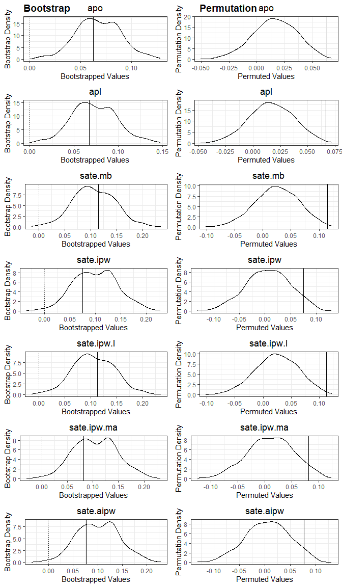

RainAttr provide tools for estimation and inference of attribution and sample average treatment effect in rainfall enhancement trials, based on the two-stage linear mixed model approach employed by Chambers et al. (2022). It also provides tools for exploratory analysis of rainfall enhancement trial data.
Installation
You can install the development version of RainAttr from GitHub with:
# install.packages("remotes")
remotes::install_github("Zy1225/RainAttr")Example
This basic example shows how to use the package for estimation, bootstrap inference, and permutation inference.
library(RainAttr)
result = rain_attr(
#gauge-day level trial data
data = oman,
#LMM formula fitted to the upwind (first-stage) observations
upwind_lmm_formula = LogRain ~ Gauge.Elevation + Steering.Wind.Speed + Total.Totals + PC2.Dry.Temperature + PC1.Relative.Humidity + PC1.Ground.Level.Pressure + (1|TrialDay),
#Variable name for storing instrumental prediction from upwind (first-stage) LMM
instr_pred_name = 'natural_pred',
#Types of instrumental prediction: 'Unconditional' or 'Conditional'
instr_pred_type = 'Conditional',
#LMM formula fitted to the downwind (second-stage) observations
downwind_lmm_formula = LogRain - natural_pred ~ Gauge.Elevation + Target.H.01 + Target.H.02 + Target.H.03 + Target.H.04 + Target.H.05 + Target.H.06 + Target.H.07 + Target.H.08 + Target.H.09 + Target.H.10 + Gauge.Elevation:Target.H.01 + Gauge.Elevation:Target.H.02 + (1|TrialDay),
#Formula for fitting a logistic regression model to the indicator of rainfall event (used for bootstrapping of rainfall events when bootstrap_opt(bootstrap_zero) = TRUE)
downwind_logistic_formula = (Rain.Gauge.Measurement > 0) ~ Gauge.Elevation + natural_pred + Target.H.01 + Target.H.02 + Target.H.03 + Target.H.04 + Target.H.05 + Target.H.06 + Target.H.07 + Target.H.08 + Target.H.09 + Target.H.10 + Gauge.Elevation:Target.H.01 + Gauge.Elevation:Target.H.02,
#Formula for fitting the propensity score model to downwind observations, where responses are indicators of whether each downwind observations is a 'Target'
downwind_propensity_formula = (Gauge.Day.Type == 'Target') ~ Total.Totals + PC1.Dry.Temperature + PC1.Relative.Humidity + PC1.Ground.Level.Pressure,
#Specify the column in input data that contains the raw rainfall
rain_col_name = 'Rain.Gauge.Measurement',
#Logical expression identifying subset of observations to which upwind_lmm_formula is fitted
upwind_subset = Gauge.Day.Type == 'Upwind',
#Logical expression identifying subset of observations to which downwind_lmm_formula is fitted
downwind_subset = Gauge.Day.Type %in% c('Target','Control'),
#Logical expression identifying subset of observations of those that are 'Target'
downwind_target_subset = Gauge.Day.Type == 'Target',
#Logical expression identifying subset of observations of those that are 'Control'
downwind_control_subset = Gauge.Day.Type == 'Control',
#Logical expression identifying subset of observations with rainfall event
positive_subset = Rain.Gauge.Measurement > 0,
#Types of correction (for back-transformation bias) used for computing the attribution estimate: 'ChambersEtAl', 'ChambersEtAl_No_Winsorize', 'ThoEtAl', or 'No'
attr_type = 'ThoEtAl',
#Vector of variable names in downwind_lmm_formula to identify non-ionizer related covariates, whose effects are not included in the calculation of attribution and SATE
x_downwind_name = c('Gauge.Elevation'),
#Indicator for whether to perform bootstrap inference on attribution and SATE
bootstrap = TRUE,
#Specification of various option for bootstrap, e.g., bootstrap_opt(bootstrap_type = 'PREB1'), currently support bootstrap_type = 'PREB0', 'PREB1', 'PREB2', 'REB0', 'REB1', 'REB2', 'MREB1'
bootstrap_option = bootstrap_opt(B_bootstrap = 500,
bootstrap_seed = 123,
bootstrap_parallel = TRUE,
bootstrap_parallel_num_worker = 6),
#Indicator for whether to perform permutation inference on attribution and SATE
permutation = TRUE,
#Specification of various option for permutation, e.g., whether to permute the operating states between ionizers, between days, between gaugedays
permutation_option = permutation_opt(B_permutation = 500,
permutation_seed = 999,
permutation_parallel = TRUE,
permutation_parallel_num_worker = 6)
)The main function, rain_attr, returns an S3 object that supports a range of common S3 methods, including:
summary(result)
#> Summary of Two Stage LMM Rainfall Enhancement Analysis
#> ======================================================================
#>
#> Attribution Results (Assuming Log-Rainfall being Modelled):
#> Estimate 95% Bootstrap CI Bootstrap P-Val Permutation P-Val
#> apo 6.27% (2.3799%, 11.21%) 0*** 0***
#> apl 6.69% (2.438%, 12.63%) 0*** 0***
#> ---
#> Signif. codes: 0 '***' 0.001 '**' 0.01 '*' 0.05 '.' 0.1 ' ' 1
#>
#> SATE Results:
#> Estimate 95% Bootstrap CI Bootstrap P-Val Permutation P-Val
#> sate.mb 0.1153 (0.0259, 0.1899) 0*** 0***
#> sate.ipw 0.0751 (0.022, 0.1861) 0.01* 0.05.
#> sate.ipw.l 0.1132 (0.0263, 0.1898) 0*** 0***
#> sate.ipw.ma 0.0813 (0.0278, 0.1895) 0.01* 0.05.
#> sate.aipw 0.0771 (0.0243, 0.1877) 0.01* 0.05.
#> ---
#> Signif. codes: 0 '***' 0.001 '**' 0.01 '*' 0.05 '.' 0.1 ' ' 1
#>
#>
#> ======================================================================
#>
#> Upwind (First Stage) LMM:
#> Formula:
#> LogRain ~ Gauge.Elevation + Steering.Wind.Speed + Total.Totals +
#> PC2.Dry.Temperature + PC1.Relative.Humidity + PC1.Ground.Level.Pressure +
#> (1 | TrialDay)
#>
#> Data subset used: oman [ Gauge.Day.Type == "Upwind" & Rain.Gauge.Measurement > 0 , ]
#> Number of observations: 1545, Number of groups: 292
#>
#> Random effects:
#> Groups Name Variance
#> TrialDay (Intercept) 0.4158771
#> Residual 1.6003327
#>
#> Fixed effects:
#> Estimate Std. Error t value
#> (Intercept) -1.4397 0.3988 -3.6104
#> Gauge.Elevation 0.4340 0.0740 5.8631
#> Steering.Wind.Speed -0.0964 0.0204 -4.7277
#> Total.Totals 0.0327 0.0083 3.9204
#> PC2.Dry.Temperature 0.1448 0.0527 2.7454
#> PC1.Relative.Humidity 0.1779 0.0223 7.9681
#> PC1.Ground.Level.Pressure -0.0523 0.0201 -2.6041
#>
#> ======================================================================
#>
#> Downwind (Second Stage) LMM:
#> Formula:
#> LogRain - natural_pred ~ Gauge.Elevation + Target.H.01 + Target.H.02 +
#> Target.H.03 + Target.H.04 + Target.H.05 + Target.H.06 + Target.H.07 +
#> Target.H.08 + Target.H.09 + Target.H.10 + Gauge.Elevation:Target.H.01 +
#> Gauge.Elevation:Target.H.02 + (1 | TrialDay)
#>
#> Data subset used: oman [ Gauge.Day.Type %in% c("Target", "Control") & Rain.Gauge.Measurement > 0 , ]
#> Number of observations: 4168, Number of groups: 488
#>
#> Random effects:
#> Groups Name Variance
#> TrialDay (Intercept) 0.3001795
#> Residual 1.8492958
#>
#> Fixed effects:
#> Estimate Std. Error t value
#> (Intercept) 0.3078 0.0626 4.9154
#> Gauge.Elevation -0.1958 0.0606 -3.2293
#> Target.H.01 0.3157 0.1362 2.3172
#> Target.H.02 0.2398 0.1237 1.9389
#> Target.H.03 0.2368 0.0925 2.5604
#> Target.H.04 -0.1401 0.0890 -1.5738
#> Target.H.05 0.4180 0.1319 3.1685
#> Target.H.06 -0.2002 0.1493 -1.3413
#> Target.H.07 0.2309 0.1876 1.2312
#> Target.H.08 0.0786 0.1276 0.6163
#> Target.H.09 0.5648 0.3062 1.8448
#> Target.H.10 0.0527 0.1677 0.3141
#> Gauge.Elevation:Target.H.01 -0.1335 0.1437 -0.9287
#> Gauge.Elevation:Target.H.02 -0.1978 0.1196 -1.6539and
plot(result)
Documentation
Full documentation, function references, and worked examples are available on the package website.
Citation
To cite RainAttr, run:
citation("RainAttr")
#> To cite package 'RainAttr' in publications use:
#>
#> Tho Z, Chambers R, Welsh A (2026). _RainAttr: Attribution and Sample
#> Average Treatment Effect for Rainfall Enhancement Trial Data_. R
#> package version 0.0.0.9000, <https://github.com/Zy1225/RainAttr>.
#>
#> A BibTeX entry for LaTeX users is
#>
#> @Manual{,
#> title = {RainAttr: Attribution and Sample Average Treatment Effect for Rainfall Enhancement Trial Data},
#> author = {Zhi Yang Tho and Raymond Chambers and A. H. Welsh},
#> year = {2026},
#> note = {R package version 0.0.0.9000},
#> url = {https://github.com/Zy1225/RainAttr},
#> }